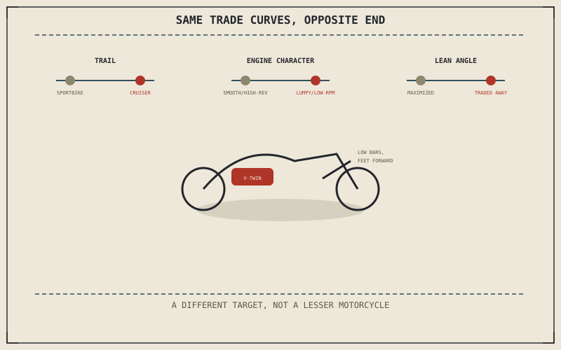

Chapter 14.2 covered a category that pushes toward cornering performance almost without compromise. A cruiser pushes in nearly the opposite direction along several of the same trade curves — not because it's a lesser motorcycle, but because it's answering a genuinely different question: relaxed, low-speed comfort and character, rather than lean angle and steering urgency.
Chapter 14.2 closed by pointing to this exact contrast: relaxed, low-speed comfort rather than cornering performance. This chapter is that opposite specialization.
Relaxed Geometry: Long Trail, Stable Over Quick
Chapter 4.3's rake and trail figures sit at the opposite end of the range from Chapter 14.2's sportbike — longer trail and more relaxed rake trade away quick, urgent steering for the kind of easy, hands-off straight-line stability Chapter 4.4's self-centering trail effect delivers most generously at that setting. This is the same trade curve Chapter 14.2 described, worked from the other direction: a cruiser gives up the sportbike's sharp turn-in specifically because effortless stability matters more to the riding a cruiser is actually built for.
The V-Twin: Torque Character Over Outright Revs
Chapter 2.10 already showed how fewer, larger cylinders produce a strong, lumpy pulse of low-RPM torque rather than the smooth, high-revving character a smaller-cylinder engine achieves — and a cruiser's overwhelmingly favoured large-displacement V-twin sits deliberately at that lumpy-pulse end of the range. Chapter 2.11 established the V-twin's angled cylinder banks as a genuine engineering trade between smoothness and compactness, and a cruiser's V-twin is chosen specifically for the visceral pulse and distinctive exhaust note that trade produces, not in spite of giving up the turbine-smooth high-RPM power a sportbike's engine layout chases instead.
A cruiser's long trail and lumpy-pulse V-twin aren't a sportbike's specifications done poorly — they're the same trade curves Chapter 14.2 described, worked deliberately toward the opposite end, in service of stability and character rather than cornering speed.

A diagram showing a cruiser's design choices — long relaxed trail, a large low-revving V-twin, feet-forward ergonomics — positioned at the opposite end of the same trade curves a sportbike pushes toward, both converging on genuinely different, legitimate targets.
Feet-Forward Ergonomics and Low Lean Angle
Chapter 4.7 already named a cruiser's low-slung floorboards and pipes as the components that ground out at a comparatively shallow lean angle, directly trading away Chapter 14.2's maximized cornering clearance for a low seat height and feet-forward lounging position instead. Chapter 13.4 described exactly this kind of ergonomic choice as closing a fit gap for a specific use — here, that use is a low, relaxed, all-day seating position rather than the sportbike's tucked, cornering-focused one, with cornering clearance the honest cost paid in exchange.
A Common Misconception, Cleared Up Early
It's a common assumption that a cruiser's lower peak power and shallower lean angle mean it's simply an unsophisticated or underpowered version of a "real" motorcycle. This chapter has shown its long trail, low-revving V-twin, and feet-forward ergonomics as precise answers to a genuinely different target — stability, low-RPM torque character, and low-speed comfort — the same way Chapter 14.2's sportbike answered cornering performance. Each loses on the other's home ground, exactly as Chapter 14.1 said every specialized category would.
Where This Leads
Chapter 14.4 turns to touring motorcycles next, a category that shares a cruiser's interest in comfort but adds a target neither the sportbike nor the cruiser was built around: covering serious distance.
Key Concepts to Remember
- Longer trail gives a cruiser easy, hands-off straight-line stability at the cost of a sportbike's quick, urgent turn-in.
- A large, low-revving V-twin trades smooth high-RPM power for the strong low-RPM torque pulse and distinctive character cruisers are chosen for.
- Low-slung components trade away cornering clearance for a low seat height and feet-forward, all-day comfortable position.
Cross-References
| ← Ch. 2.10 | Established fewer, larger cylinders producing a lumpy low-RPM torque pulse; this chapter treats that character as exactly what a cruiser's engine is chosen for. |
| ← Ch. 2.11 | Established the V-twin's angled cylinder banks as a smoothness-versus-compactness trade; this chapter treats a cruiser's V-twin choice as favoring character over refinement. |
| ← Ch. 14.2 | Established a sportbike's design choices as converging on cornering performance; this chapter works the same trade curves toward the opposite end. |
| → Ch. 14.4 | Covers touring motorcycles, built for distance. |